Unió de Clients al Domini LDAP
Aquesta secció se centra en el procés per unir els clients al domini LDAP. Els passos són senzills.
Instal·lació dels Paquets Necessaris
Primer, assegureu-vos d'actualitzar el sistema abans de procedir amb la instal·lació:
Actualitzeu la llista de paquets:
- Executeu un apt update per assegurar-vos que disposeu de la informació més recent dels paquets.
Instal·leu els paquets necessaris:
- Instal·leu els següents paquets:
libnss-ldap, libpam-ldap i nscd.
sudo apt install libnss-ldap libpam-ldap nscd
Quan premeu la tecla ENTER durant el procés, apareixerà una finestra de configuració. Si tanqueu aquesta finestra accidentalment o voleu reconfigurar el domini, no us preocupeu: podeu tornar a obrir-la.
Reobrir la Finestra de Configuració
Per reobrir o reconfigurar la configuració del domini, executeu la comanda següent:
Utilitzeu dpkg-reconfigure lpda-auth-config per accedir de nou a la finestra de configuració.
dpkg-reconfigure lpda-auth-config
Configuració Avançada per Unir Clients al Domini LDAP
A continuació, detallo els passos per completar la configuració del client LDAP, amb explicacions clares i referències visuals per facilitar el procés.
Configuració Inicial del Reconfigure
- Servidor LDAP:
Quan aparegui la primera finestra, assegureu-vos d'introduir l'adreça del servidor en el format següent:
ldap://ip-of-the-server.
Nota: Si apareix
ldapi:///, és incorrecte.
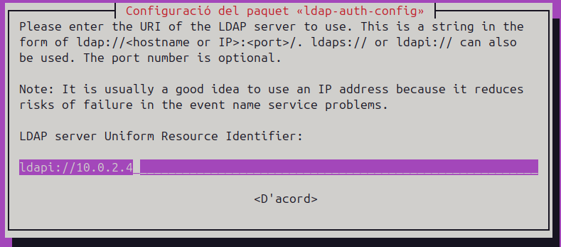
- Versió de LDAP:
Seleccioneu la versió 3 del protocol LDAP.
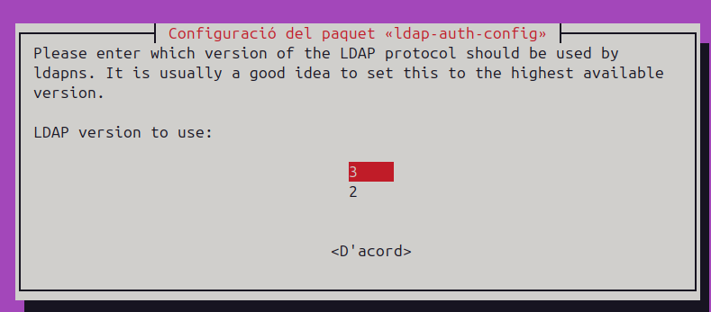
- Fer que el root local sigui administrador de la base de dades:
Seleccioneu Sí en aquesta finestra.
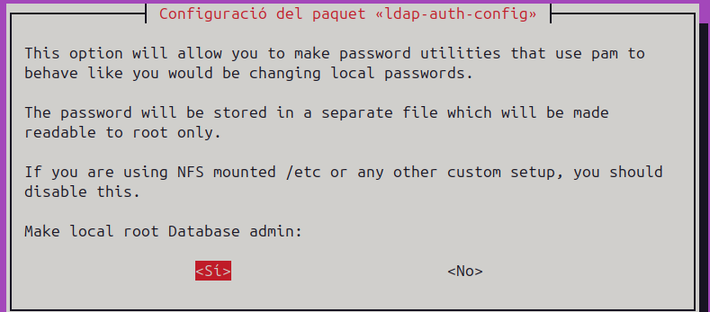
- Requereix autenticació la base de dades LDAP?
Trieu Sí.
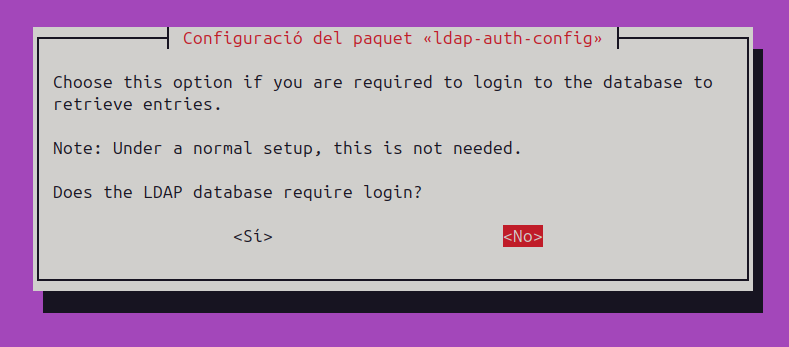
- Compte LDAP per al root: Utilitzeu un usuari "admin" que ja hagueu creat.
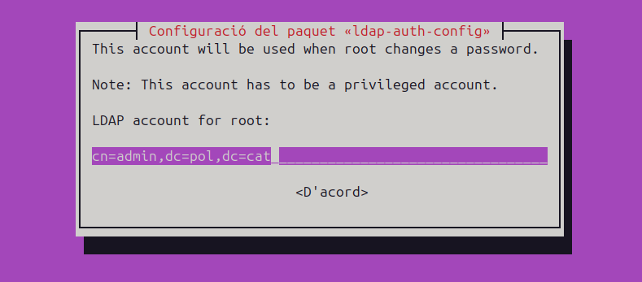
- Contrasenya del compte root de LDAP:
Introduïu la contrasenya corresponent al compte d'administrador LDAP.
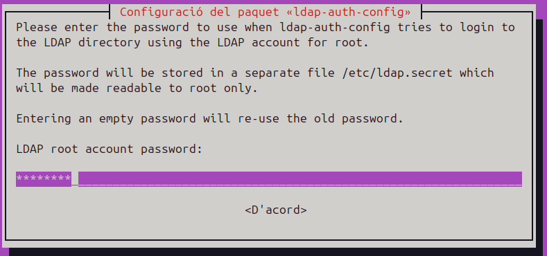
- Usuari sense privilegis per a la base de dades:
En aquest cas, s'ha afegit un altre "usuari", però en entorns reals caldria usar un altre nom.
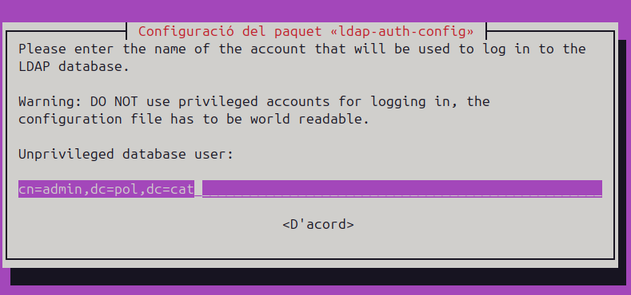
- Contrasenya per accedir a la base de dades LDAP:
Introduïu la contrasenya que s'utilitzarà per accedir-hi.
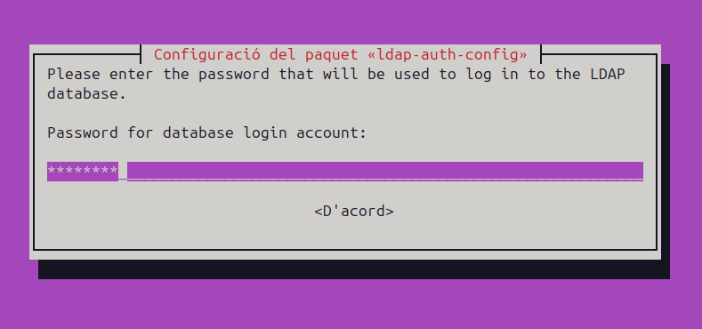
- Hash per defecte:
Deixeu el valor predeterminat com MD5.
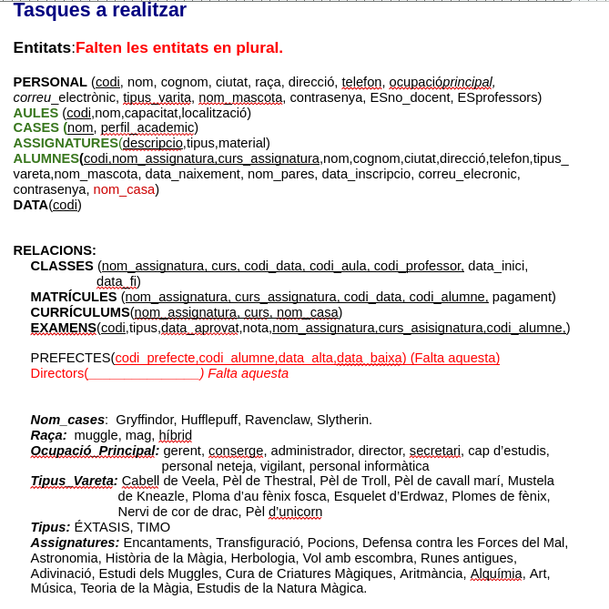
Configuració Addicional
Modificar /etc/nsswitch.conf
Afegiu les línies següents al fitxer per integrar LDAP al sistema. Aquestes línies asseguren que el sistema consulti l’LDAP per a l’autenticació en lloc de buscar la informació localment.
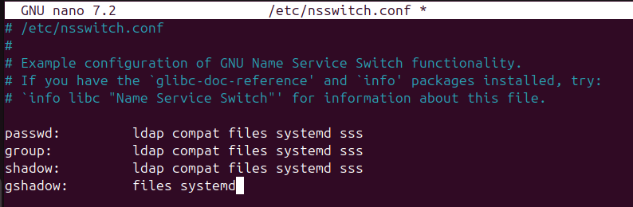
Afegir Configuració a common-session
Editeu el fitxer amb: sudo nano /etc/pam.d/common-session i afegiu aquesta línia al final:
session optional pam_mkhomedir.so skel=/etc/skel umask=022
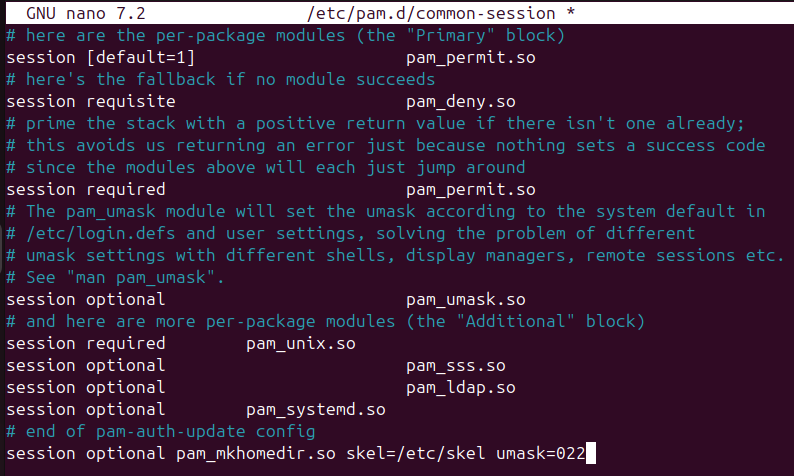
Aquesta línia crea automàticament el directori personal dels usuaris amb un umask de 022.
Configuració Opcional de LightDM
Pot ser que no sigui necessari, però si trobeu problemes per iniciar sessió amb un usuari, editeu el fitxer següent:
sudo nano /usr/share/lightdm/lightdm.conf.d/50-ubuntu.conf
Afegiu aquesta línia al final: greeter-show-manual-login=true
Nota: Amb Ubuntu 24.0, no és necessari. Només afegiu aquesta configuració si no podeu iniciar sessió.
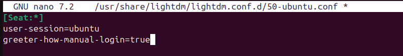
Comprovació de la Configuració LDAP
Per verificar que el sistema pot autenticar-se correctament amb LDAP, seguirem els passos següents:
Comprovar l'usuari amb la comanda getent:
Per assegurar-vos que el sistema consulta correctament l’LDAP, podeu utilitzar la comanda sudo getent passwd. Si apareix l'usuari que heu afegit, per exemple, alu1, vol dir que la configuració és correcta.
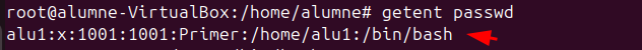
Reiniciar la màquina:
Reinicieu la màquina per garantir que tots els serveis estan completament operatius abans d'intentar iniciar sessió.
Iniciar sessió amb l'usuari LDAP:
Proveu d'iniciar sessió utilitzant l'usuari alu1 i la seva contrasenya definida a l'LDAP.
Verificar la sessió:
Un cop hàgiu iniciat sessió, podeu comprovar si sou realment l'usuari alu1 escrivint whoami. Si el resultat és alu1, vol dir que l’autenticació ha estat un èxit.
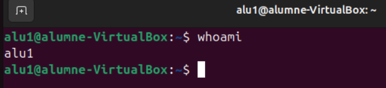